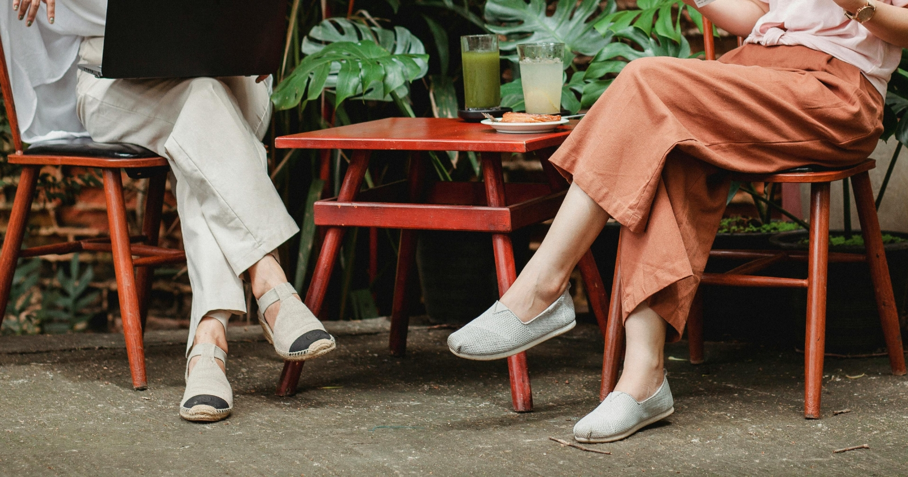

Tavaszi színkavalkád 2026-ban: Frissítsd fel a gardróbod!
Megmutatom a 2026-os tavaszi divat legnépszerűbb színeit és árnyalatait.
Gerendai Dalma vagyok, az AlmaKuckó alapítója. Azért hoztam létre ezt a blogot, hogy segítsek eligazodni a használt ruhák és a fenntartható divat sokszor útvesztőnek tűnő világában. Hiszek abban, hogy a stílusos megjelenés és a tudatosság nem zárja ki egymást, sőt: a másodkézből beszerzett darabok adják az igazán egyedi ruhatár alapját.
Sokan tartanak még mindig a használt ruháktól a higiénia vagy a minőség miatt. Az én küldetésem, hogy gyakorlati tippekkel és jól bevált trükkökkel megmutassam: a használt ruha nemcsak környezetbarát, hanem egy kifejezetten tudatos és biztonságos választás is lehet. Legyen szó a legkisebbeknek szánt gyerekruhák kiválasztásáról, vagy a féltve őrzött kedvenc darabjaink profi otthoni tisztításáról, a célom ugyanaz: meghosszabbítani a ruhák élettartamát és csökkenteni a textilipart terhelő ökológiai lábnyomunkat.
A blogon nemcsak vásárlási tanácsokat találsz, hanem mélyebbre ásunk a textilápolás rejtelmeibe is, megtanuljuk, hogyan ismerheted fel a minőségi anyagokat a turkálókban, de érdekességekkel is szolgálok a divattörténelem világából is. Az AlmaKuckó nem csupán egy márka, hanem egy közösség azoknak, akik értékelik a minőséget a mennyiség felett. Köszönöm, hogy velem tartasz ezen az úton, és teszel egy lépést a fenntarthatóbb jövő felé – egy-egy megmentett ruhadarabbal kezdve.
Megmutatom a 2026-os tavaszi divat legnépszerűbb színeit és árnyalatait.

Megismerheted hogyan vált természetessé az, ami régen közfelháborodást keltett.

Megtudhatod; tiszta-e a bolti ruha, vagy hogyan tisztítsd használt kincseidet.
Itt részletesebben is írok arról, miért érdemes a secondhand mellett dönteni.